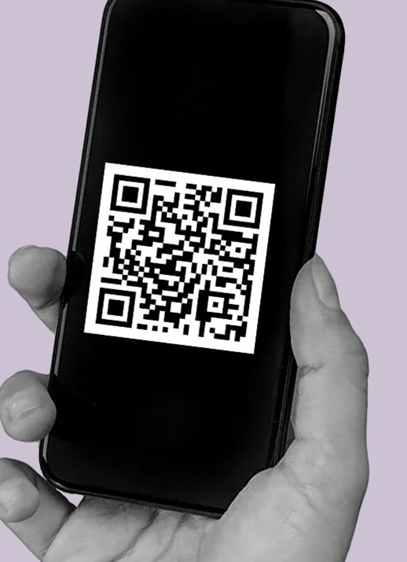

Eyes and lips slightly bigger
Clearing blemishes, smoothing skin
Narrowing the bridge of the nose
It's increasingly common to come across 'beauty filters' like these. In one click, they promise an 'instantly improved' version of your face. You, just prettier.
But the technology is not neutral. Filters are designed by humans, who have different cultural and historical biases over what 'beauty' means, and who is, and who should be beautiful.
The 'beauty' tweaks in the filter you just used are based on contemporary Western beauty norms for women.
Our research aims to question how technology is embedding exclusionary cultural norms of judgment and unequal value: whose faces are valued and privileged? How is technology further prompting us to judge some faces as 'needing correction'?
So when you see beauty filters, ask: what kinds of old ideas about beauty are they re-presenting in a new, technological form? Whose beauty standard is embedded in suggested beauty edits? And how is technology nudging us to continually judge ourselves?
If you are aged 18-30, please scan the QR code:
